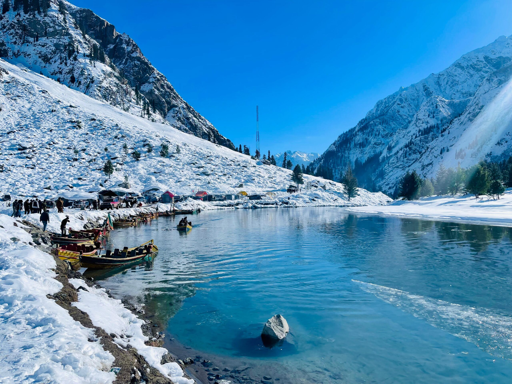

Kalam is a worth seeing site in Swat valley. Kalam is located at the distance of 100 km from the mingora, in the northern upper part of Swat valley. It is located at the bank of the Suvastu river in Khyber Pakhtunkhwa province. Kalam is encircled by green hills, thick forests and blessed with mesmerizing Lakes, lively meadows and waterfalls, which make the Valley a must wandering place. It is the birthplace of the Swat River, made of two major tributaries; Gabral River and Ushu River. It is a vast sub-valley of Swat; is located at an elevation of about 2,000 meters (6, 562 feet) above sea level, and providing a room for a small but fertile plateau above Swat River, making it ideal for farming. A metalled road ends here in Kalam and a shingled road leads to the Ushu and Utror valleys. Visitors can see the snowy mountains from Matiltan, including Falak Sair Mountain, with height of 5, 918 meters (19,416 feet) and an unnamed peak of 6,096 meters (20, 000 feet) height.
1:The Kalam Bazaar (The Downtown)
2:Matiltan
3:Ushu
4:Utror
5:Gabral
6:Mahodand Lake
7:Kundol Lake
8:Izmis Lake
1:Regal One Hotel
2:MK Lodges
3:Stone House
4:Spring Fields Hotel
The climate in Kalam کالام is cold and temperate. Kalam کالام is a city with a significant rainfall. Even in the driest month there is a lot of rain. The Köppen-Geiger climate classification is Dfb. In Kalam کالام, the average annual temperature is -1.1 °C | 30.0 °F. The rainfall here is around 1361 mm | 53.6 inch per year.
